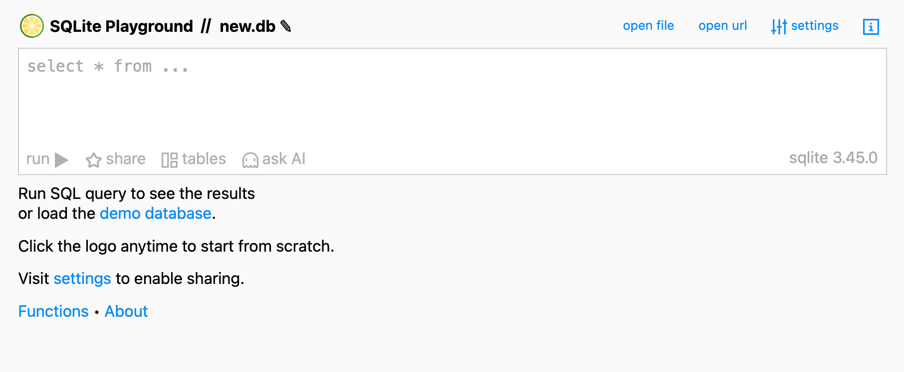
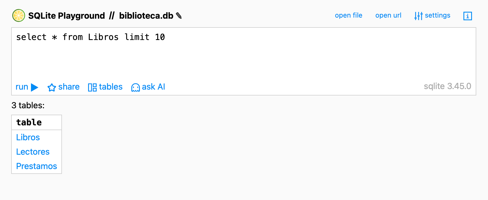
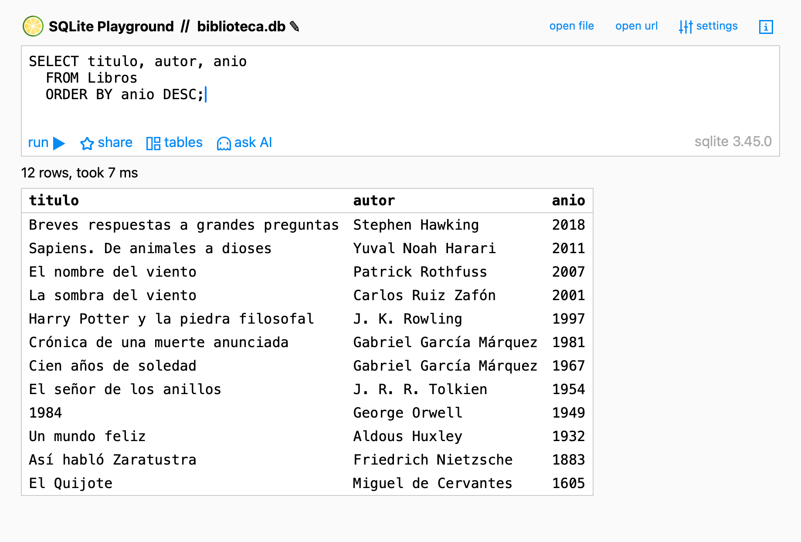

Contenido
Lo que vas a hacer hoy
- Cargar
biblioteca.dben SQLime, una herramienta web para escribir SQL sin instalar nada. - Aprender los 5 ladrillos del SQL para preguntar:
SELECT,WHERE,ORDER BY,LIKE,BETWEEN(másIS NULLpara campos vacíos). - Resolver 10 retos sobre
biblioteca.dbque cubren todo lo anterior. - Empezar a usar la Chuleta SQL que llevarás impresa al mini-control de S6.
ImportanteAntes de empezar
Hoy no vas a tocar tu .odb: trabajarás sobre biblioteca.db (la base de datos del profesor) directamente en el navegador. Tu proyecto vuelve a aparecer en S5.
Lo único que tienes que descargar hoy es biblioteca.db. Lo encontrarás en el siguiente apartado.
Hoy cambian dos cosas a la vez
ImportanteLa herramienta y el idioma
Hasta S3 trabajabas con LibreOffice Base sobre tu base de datos del proyecto. A partir de hoy y hasta S6 cambian dos cosas:
- La herramienta: SQLime, en el navegador, sobre
biblioteca.db(la base de datos del profesor). - El idioma: SQL puro, escrito por ti. Adiós al editor gráfico de consultas.
Tu propio proyecto vuelve a aparecer en S5, cuando le lleves SQL. Y se cierra en S7, con la entrega final.
TipTres diferencias prácticas con Base que vas a notar enseguida
- Identificadores sin comillas dobles: en SQL puro escribes
SELECT titulo FROM Libros, no"Libros". - Fechas como TEXT en formato ISO entre comillas simples:
'2025-10-02'. - Lo que en S3 escribías como
IS EMPTYen el editor gráfico de Base, en SQL puro se escribeIS NULL. Mismo concepto, sintaxis distinta.
1. Abrir SQLime y cargar biblioteca.db
Descarga aquí biblioteca.db. Por defecto se guardará en la carpeta Descargas del equipo. Hoy te basta con eso (se borrará cuando se apague el equipo, pero hoy te llega).
Abre el navegador y ve a https://sqlime.org/. Verás la pantalla inicial:

select * from ... como pista, barra superior con open file / open url / settings, y bajo el editor los botones run / share / tables / ask AI. Todo en minúsculas.TipDetalles del interfaz que conviene fijar
- Arriba a la izquierda, junto al limón, pone SQLite Playground // new.db. Cuando cargues tu archivo, ahí leerás biblioteca.db.
- Arriba a la derecha tienes open file (abrir un
.dbdesde tu disco) y open url (abrir uno desde una dirección web). - El editor es la caja blanca grande del centro, con la pista en gris
select * from .... - Bajo el editor, run ▶ ejecuta lo que tengas escrito. Atajo:
Ctrl+Enter. - tables te muestra qué tablas tiene cargada la base de datos en este momento.
- No hay panel lateral: todo lo que necesitas está en esta única pantalla.
Para cargar biblioteca.db:
- Pulsa open file arriba a la derecha.
- Selecciona el archivo
biblioteca.dbdesde la carpeta Descargas. - La barra superior cambiará de new.db a biblioteca.db: ya está cargada.
Para comprobar que las 3 tablas están donde tienen que estar, pulsa tables bajo el editor. Debes ver:

tables aparece la lista “3 tables:” con Libros, Lectores y Prestamos. Si ves esas tres, has cargado bien.Si solo te aparece new.db y ninguna tabla, vuelve al paso 1: la BD no se cargó.
2. SELECT — pedir columnas de una tabla
La instrucción más básica del SQL pide columnas concretas (o todas) de una tabla. La forma general:
<span id="cb1-1"><a aria-hidden="true" href="#cb1-1" tabindex="-1"></a><span class="kw">SELECT</span> columna1, columna2, <span class="op">..</span>.</span>
<span id="cb1-2"><a aria-hidden="true" href="#cb1-2" tabindex="-1"></a><span class="kw">FROM</span> tabla;</span>Para pedir todas las columnas se usa el comodín *:
<span id="cb2-1"><a aria-hidden="true" href="#cb2-1" tabindex="-1"></a><span class="kw">SELECT</span> <span class="op">*</span> <span class="kw">FROM</span> Libros;</span>Cada instrucción SQL termina en punto y coma (;). En SQLime puedes omitirlo si solo escribes una, pero acostúmbrate: en otras herramientas es obligatorio.
Pruébalo: pide título y autor
Borra lo que haya en el editor y escribe:
<span id="cb3-1"><a aria-hidden="true" href="#cb3-1" tabindex="-1"></a><span class="kw">SELECT</span> titulo, autor</span>
<span id="cb3-2"><a aria-hidden="true" href="#cb3-2" tabindex="-1"></a><span class="kw">FROM</span> Libros;</span>Pulsa run ▶ (o Ctrl+Enter). Aparece debajo una tabla con 12 filas, una por libro. Arriba de la tabla, SQLime te dice cuántas filas devolvió y cuánto tardó: algo como “12 rows, took 7 ms”.
Tip¿Qué pasa si pongoSELECT *?
SELECT * FROM Libros; devuelve todas las columnas: id, título, autor, género, año y ejemplares. Útil para echar un vistazo, pero en consultas serias se piden solo las columnas que interesan, para que el resultado sea más legible.
3. WHERE — filtrar las filas
Con SELECT solo, te llevas toda la tabla. Para quedarte con las filas que cumplen una condición se añade WHERE:
<span id="cb4-1"><a aria-hidden="true" href="#cb4-1" tabindex="-1"></a><span class="kw">SELECT</span> columnas</span>
<span id="cb4-2"><a aria-hidden="true" href="#cb4-2" tabindex="-1"></a><span class="kw">FROM</span> tabla</span>
<span id="cb4-3"><a aria-hidden="true" href="#cb4-3" tabindex="-1"></a><span class="kw">WHERE</span> condicion;</span>Operadores que vas a usar a diario:
| Operador | Significado | Ejemplo |
|---|---|---|
= |
igual a | genero = 'Fantasía' |
<> |
distinto de | genero <> 'Novela' |
<, >, <=, >= |
menor/mayor que (incluye igual) | anio < 1950 |
AND |
y a la vez | genero = 'Novela' AND anio > 2000 |
OR |
una de las dos | genero = 'Novela' OR genero = 'Fantasía' |
NOT |
niega la condición | NOT (anio < 2000) |
Las cadenas de texto van entre comillas simples: 'Fantasía', 'Lucía'. Los números, sin comillas: 1950, 3.
Pruébalo
<span id="cb5-1"><a aria-hidden="true" href="#cb5-1" tabindex="-1"></a><span class="kw">SELECT</span> titulo, genero</span>
<span id="cb5-2"><a aria-hidden="true" href="#cb5-2" tabindex="-1"></a><span class="kw">FROM</span> Libros</span>
<span id="cb5-3"><a aria-hidden="true" href="#cb5-3" tabindex="-1"></a><span class="kw">WHERE</span> genero <span class="op">=</span> <span class="st">'Fantasía'</span>;</span>Debe devolverte 3 filas: Harry Potter…, El señor de los anillos y El nombre del viento.
4. ORDER BY — ordenar el resultado
ORDER BY se pone al final de la consulta:
<span id="cb6-1"><a aria-hidden="true" href="#cb6-1" tabindex="-1"></a><span class="kw">SELECT</span> columnas</span>
<span id="cb6-2"><a aria-hidden="true" href="#cb6-2" tabindex="-1"></a><span class="kw">FROM</span> tabla</span>
<span id="cb6-3"><a aria-hidden="true" href="#cb6-3" tabindex="-1"></a><span class="kw">WHERE</span> condicion</span>
<span id="cb6-4"><a aria-hidden="true" href="#cb6-4" tabindex="-1"></a><span class="kw">ORDER</span> <span class="kw">BY</span> campo <span class="kw">ASC</span>; <span class="co">-- ASC = ascendente (por defecto)</span></span>
<span id="cb6-5"><a aria-hidden="true" href="#cb6-5" tabindex="-1"></a><span class="kw">ORDER</span> <span class="kw">BY</span> campo <span class="kw">DESC</span>; <span class="co">-- DESC = descendente</span></span>También puedes ordenar por varios campos a la vez: ORDER BY genero, anio DESC ordena primero por género (alfabéticamente) y, dentro de cada género, por año descendente.
Pruébalo
<span id="cb7-1"><a aria-hidden="true" href="#cb7-1" tabindex="-1"></a><span class="kw">SELECT</span> titulo, autor, anio</span>
<span id="cb7-2"><a aria-hidden="true" href="#cb7-2" tabindex="-1"></a><span class="kw">FROM</span> Libros</span>
<span id="cb7-3"><a aria-hidden="true" href="#cb7-3" tabindex="-1"></a><span class="kw">ORDER</span> <span class="kw">BY</span> anio <span class="kw">DESC</span>;</span>El resultado son los 12 libros, los más recientes primero (Breves respuestas a grandes preguntas, 2018) y al final el más antiguo (El Quijote, 1605):

SELECT titulo, autor, anio FROM Libros ORDER BY anio DESC; en SQLime. La cabecera del resultado pone “12 rows, took 7 ms”.5. LIKE — buscar texto por patrón
Cuando no buscas un valor exacto sino algo que contenga una palabra, usa LIKE con dos comodines:
| Comodín | Significa |
|---|---|
% |
cualquier secuencia de caracteres (incluida vacía) |
_ |
exactamente un carácter |
Patrones típicos:
| Patrón | Encuentra |
|---|---|
'García%' |
empieza por García |
'%viento%' |
contiene viento en cualquier posición |
'%a' |
termina en a |
'_a%' |
la segunda letra es una a |
WarningLas tildes cuentan
En SQLite, LIKE ignora mayúsculas/minúsculas para letras ASCII ('fantasia' ≈ 'FANTASIA'), pero las tildes son letras distintas: 'fantasia' no encuentra 'Fantasía'. Si la palabra del dato lleva tilde, escribe la tilde en el patrón. La regla práctica es: copia el patrón con tildes y mayúsculas reales.
Pruébalo
<span id="cb8-1"><a aria-hidden="true" href="#cb8-1" tabindex="-1"></a><span class="kw">SELECT</span> titulo</span>
<span id="cb8-2"><a aria-hidden="true" href="#cb8-2" tabindex="-1"></a><span class="kw">FROM</span> Libros</span>
<span id="cb8-3"><a aria-hidden="true" href="#cb8-3" tabindex="-1"></a><span class="kw">WHERE</span> titulo <span class="kw">LIKE</span> <span class="st">'%viento%'</span>;</span>Debe devolver 2 filas: La sombra del viento y El nombre del viento.
6. BETWEEN — rangos de números o fechas
Para filtrar por un intervalo (incluyendo los dos extremos), BETWEEN x AND y:
<span id="cb9-1"><a aria-hidden="true" href="#cb9-1" tabindex="-1"></a><span class="kw">WHERE</span> anio <span class="kw">BETWEEN</span> <span class="dv">1950</span> <span class="kw">AND</span> <span class="dv">2000</span></span>
<span id="cb9-2"><a aria-hidden="true" href="#cb9-2" tabindex="-1"></a><span class="co">-- equivale a:</span></span>
<span id="cb9-3"><a aria-hidden="true" href="#cb9-3" tabindex="-1"></a><span class="kw">WHERE</span> anio <span class="op">>=</span> <span class="dv">1950</span> <span class="kw">AND</span> anio <span class="op"><=</span> <span class="dv">2000</span></span>Funciona también con fechas, que en SQLite se guardan como TEXT en formato 'aaaa-mm-dd':
<span id="cb10-1"><a aria-hidden="true" href="#cb10-1" tabindex="-1"></a><span class="kw">WHERE</span> fecha_prestamo <span class="kw">BETWEEN</span> <span class="st">'2025-10-01'</span> <span class="kw">AND</span> <span class="st">'2025-10-31'</span></span>Pruébalo
<span id="cb11-1"><a aria-hidden="true" href="#cb11-1" tabindex="-1"></a><span class="kw">SELECT</span> titulo, anio</span>
<span id="cb11-2"><a aria-hidden="true" href="#cb11-2" tabindex="-1"></a><span class="kw">FROM</span> Libros</span>
<span id="cb11-3"><a aria-hidden="true" href="#cb11-3" tabindex="-1"></a><span class="kw">WHERE</span> anio <span class="kw">BETWEEN</span> <span class="dv">1950</span> <span class="kw">AND</span> <span class="dv">2000</span></span>
<span id="cb11-4"><a aria-hidden="true" href="#cb11-4" tabindex="-1"></a><span class="kw">ORDER</span> <span class="kw">BY</span> anio;</span>Devuelve 4 filas, los libros publicados entre 1950 y 2000 (ambos incluidos): El señor de los anillos (1954), Cien años de soledad (1967), Crónica de una muerte anunciada (1981) y Harry Potter y la piedra filosofal (1997). La sombra del viento (2001) queda fuera por un año, y 1984 (1949) también.
7. IS NULL — filas con un campo vacío
Cuando un campo no tiene valor, en SQL se llama NULL. Para preguntar por filas con un campo vacío:
<span id="cb12-1"><a aria-hidden="true" href="#cb12-1" tabindex="-1"></a><span class="kw">WHERE</span> campo <span class="kw">IS</span> <span class="kw">NULL</span> <span class="co">-- el campo está vacío</span></span>
<span id="cb12-2"><a aria-hidden="true" href="#cb12-2" tabindex="-1"></a><span class="kw">WHERE</span> campo <span class="kw">IS</span> <span class="kw">NOT</span> <span class="kw">NULL</span> <span class="co">-- el campo tiene algún valor</span></span>TipPuente con S3
En S3, en el editor gráfico de Base, escribías IS EMPTY para lo mismo. Es la misma idea: NULL = sin valor. Solo cambia la sintaxis: en SQL puro siempre IS NULL (estándar mundial); el IS EMPTY era una rareza del editor visual de LibreOffice.
Pruébalo
<span id="cb13-1"><a aria-hidden="true" href="#cb13-1" tabindex="-1"></a><span class="kw">SELECT</span> id_prestamo, id_libro, fecha_prestamo</span>
<span id="cb13-2"><a aria-hidden="true" href="#cb13-2" tabindex="-1"></a><span class="kw">FROM</span> Prestamos</span>
<span id="cb13-3"><a aria-hidden="true" href="#cb13-3" tabindex="-1"></a><span class="kw">WHERE</span> fecha_devolucion <span class="kw">IS</span> <span class="kw">NULL</span>;</span>Devuelve los préstamos cuyo libro aún no se ha devuelto: 4 filas (los préstamos 6, 9, 12 y 14).
8. Los 10 retos de S4
Ahora te toca a ti. Resuelve los 10 retos siguientes sobre biblioteca.db. Cada reto te dice cuántas filas debe devolver tu consulta (y, si el orden importa, cuál es la primera). Si tu resultado coincide, está bien.
Conserva tus consultas en un archivo de texto llamado retos_sql.sql. Para crearlo, abre el editor de texto Pluma (lo tienes en el menú de aplicaciones del IES, en Accesorios). Pega cada consulta funcionando precedida de un comentario -- Reto N. Ese archivo lo subirás a Moodle al final de la sesión y lo seguirás usando en S5.
WarningCuida el nombre Y la extensión al guardar
En Pluma → Guardar como…:
- Nombre del archivo: escribe
retos_sql.sqlexactamente. Sin espacios, todo en minúsculas. - Extensión: debe ser
.sql, no.txt. Si Pluma te añade.txtautomáticamente, en el desplegable de tipo de archivo elige “Todos los archivos” o equivalente, y escribe la extensión.sqltú mismo. - Comprueba al final que el archivo aparece en Descargas (o donde lo hayas guardado) como
retos_sql.sql. Si poneretos_sql.sql.txtoretos_sql.txt, renómbralo (clic derecho → Renombrar).
Esto importa: si subes a Moodle un .txt, en S5 abrirás un archivo que no se identifica como SQL y empiezas el día con un problema técnico evitable.
TipSi un reto no te sale
Salta al siguiente. No te quedes bloqueado: en clase los corregimos todos juntos. Lo importante es que lo hayas intentado y tengas claro qué cláusula te faltaba.
Reto 1 — Lista título y autor de todos los libros
Tu consulta debe devolver: 12 filas, con dos columnas (titulo, autor).
NotaPista
SELECT con dos columnas, FROM la tabla Libros. Sin WHERE, sin ORDER BY. Termina la sentencia con ;.
Reto 2 — Lista todos los datos de todos los lectores
Tu consulta debe devolver: 8 filas, con 5 columnas (id_lector, nombre, apellidos, curso, email).
NotaPista
Para “todos los datos” tienes el comodín * después de SELECT. Tabla: Lectores.
Reto 3 — Lista los libros ordenados por año, del más antiguo al más reciente
Tu consulta debe devolver: 12 filas. La primera debe ser El Quijote (1605); la última, Breves respuestas a grandes preguntas (2018).
NotaPista
SELECT + FROM + ORDER BY por la columna del año. Para “del más antiguo al más reciente” piensa: del valor más pequeño al más grande. ¿Eso es ASC o DESC? (Pista de la pista: ASC es el por defecto, así que puedes omitirlo.)
Reto 4 — Lectores del curso 1BACH-A
Tu consulta debe devolver: 2 filas. Son Lucía Gómez y Mario Pérez.
NotaPista
WHERE con =. Cuidado: 1BACH-A es texto, así que va entre comillas simples. Si pones comillas dobles o lo dejas sin comillas, fallará.
Reto 5 — Libros publicados antes de 1950
Tu consulta debe devolver: 4 filas. Los más antiguos de la base de datos. La primera (sin orden, según el orden natural de la tabla) será El Quijote.
NotaPista
WHERE con <. El año es un número, así que va sin comillas: WHERE anio < 1950.
Reto 6 — Libros del género Novela ordenados por título
Tu consulta debe devolver: 3 filas, en este orden:
- Cien años de soledad
- Crónica de una muerte anunciada
- La sombra del viento
NotaPista
WHERE para filtrar por género + ORDER BY para ordenar. El género 'Novela' va con comillas simples (es texto). El orden alfabético es ASC (por defecto).
Reto 7 — Libros cuyo título contiene “viento”
Tu consulta debe devolver: 2 filas. Son La sombra del viento y El nombre del viento.
NotaPista
WHERE con LIKE y dos comodines %. Recuerda: %palabra% significa “contiene la palabra en cualquier posición”. La palabra viento no lleva tilde, así que el patrón tampoco.
Reto 8 — Libros publicados entre 1950 y 2000, ordenados por año descendente
Tu consulta debe devolver: 4 filas, en este orden:
- Harry Potter y la piedra filosofal (1997)
- Crónica de una muerte anunciada (1981)
- Cien años de soledad (1967)
- El señor de los anillos (1954)
NotaPista
WHERE con BETWEEN ... AND ... (es inclusivo: 1950 y 2000 entran) + ORDER BY anio DESC. Recuerda: el año es número, sin comillas.
Reto 9 — Préstamos hechos en octubre de 2025
Tu consulta debe devolver: 4 filas (los préstamos 1, 2, 3 y 4).
NotaPista
BETWEEN también funciona con fechas, pero las fechas son TEXT. Las escribes entre comillas simples y en formato 'aaaa-mm-dd'. ¿Cuál es el primer día de octubre de 2025? ¿Y el último?
Reto 10 — Lectores que no tienen email registrado
Tu consulta debe devolver: 1 fila. Es Paula Navarro Suárez.
NotaPista
Para campos vacíos, en SQL puro: WHERE email IS NULL. Recuerda: ya no estamos en Base, así que no es IS EMPTY.
Producto final de S4
Cuando termines, debes tener:
biblioteca.dbcargada en SQLime y funcionando.- Un archivo
retos_sql.sqlcon las 10 consultas resueltas, cada una precedida de-- Reto N.
Plantilla del archivo:
<span id="cb14-1"><a aria-hidden="true" href="#cb14-1" tabindex="-1"></a><span class="co">-- retos_sql.sql · TICO 1.º Bach · IES El Majuelo</span></span>
<span id="cb14-2"><a aria-hidden="true" href="#cb14-2" tabindex="-1"></a><span class="co">-- Alumno: <tu nombre> Tema: <tu tema></span></span>
<span id="cb14-3"><a aria-hidden="true" href="#cb14-3" tabindex="-1"></a></span>
<span id="cb14-4"><a aria-hidden="true" href="#cb14-4" tabindex="-1"></a><span class="co">-- Reto 1</span></span>
<span id="cb14-5"><a aria-hidden="true" href="#cb14-5" tabindex="-1"></a><span class="kw">SELECT</span> titulo, autor <span class="kw">FROM</span> Libros;</span>
<span id="cb14-6"><a aria-hidden="true" href="#cb14-6" tabindex="-1"></a></span>
<span id="cb14-7"><a aria-hidden="true" href="#cb14-7" tabindex="-1"></a><span class="co">-- Reto 2</span></span>
<span id="cb14-8"><a aria-hidden="true" href="#cb14-8" tabindex="-1"></a><span class="kw">SELECT</span> <span class="op">*</span> <span class="kw">FROM</span> Lectores;</span>
<span id="cb14-9"><a aria-hidden="true" href="#cb14-9" tabindex="-1"></a></span>
<span id="cb14-10"><a aria-hidden="true" href="#cb14-10" tabindex="-1"></a><span class="co">-- ... (etcétera hasta el Reto 10)</span></span>ImportanteAntes de irte: suberetos_sql.sqly crea una copia de seguridad-s4
En la tarea “TAREA - Bases de datos” harás dos cosas:
- Sube tu
retos_sql.sqlcon las 10 consultas (archivo nuevo). - Crea una copia
-s4.odbcomo foto del estado pre-SQL:- Descarga el
<tu_tema>.odbque tenías subido de S3. - Ábrelo en LibreOffice Base con doble clic.
- Archivo → Guardar como… → escribe el nombre
<tu_tema>-s4.odb. Guárdalo en Descargas, junto al<tu_tema>.odboriginal. - Sube
<tu_tema>-s4.odba Moodle. NO borres el<tu_tema>.odbque ya tenías subido: tiene que quedarse ahí para que en S5 lo descargues y sigas trabajando con él.
- Descarga el
Al terminar S4 deben quedar tres archivos en Moodle: <tu_tema>.odb (intacto desde S3), <tu_tema>-s4.odb (copia idéntica con sello pre-SQL) y retos_sql.sql.
Hoy no has modificado el contenido del .odb, pero hacemos una foto con el sello -s4 para guardar el estado anterior a tocar SQL. A partir de S5 seguirás trabajando sobre el <tu_tema>.odb (sin sufijo) durante el resto de la unidad; el -s4.odb se queda en Moodle como referencia y no se vuelve a tocar.
Mantén la entrega en estado borrador (no pulses “Entregar tarea”). Detalles en Cómo se guarda tu trabajo entre sesiones.
En S5 vas a aprender a combinar tablas con JOIN y a modificar datos con INSERT, UPDATE y DELETE. Después llevarás esos comandos a tu propio .odb. Y para repasar en cualquier momento, tienes la Chuleta SQL.
Si te atascas
| Síntoma | Causa probable | Cómo se arregla |
|---|---|---|
no such table: Libros |
No has cargado biblioteca.db, o lo has cargado pero estás en otra pestaña |
Pulsa open file → selecciona biblioteca.db otra vez. La barra superior debe poner biblioteca.db. |
no such column: titulo |
Has escrito mal el nombre del campo o de la tabla (mayúsculas/minúsculas en el nombre de tabla SÍ importan en SQLite) | Comprueba el nombre exacto. Pulsa tables y haz clic en el nombre de la tabla para ver sus columnas. |
Mi WHERE con texto no devuelve nada |
Has usado comillas dobles "Novela" en vez de comillas simples 'Novela' |
Cambia a comillas simples. En SQLite, las comillas dobles son para identificadores con espacios, no para texto. |
LIKE 'fantasia%' no devuelve nada y debería |
El dato lleva tilde (Fantasía) y el patrón no | Escribe el patrón con tilde: LIKE 'Fantasía%' o LIKE '%fantasía%'. |
IS EMPTY me da error |
IS EMPTY solo existe en el editor gráfico de Base |
Aquí, en SQL puro, escribe IS NULL. |
Pulso run y no pasa nada |
El editor está vacío o solo tiene comentarios -- |
Asegúrate de que hay al menos una sentencia SELECT. |
Mi BETWEEN con fechas no devuelve nada |
Te has olvidado de las comillas simples o has puesto formato dd/mm/aaaa |
Usa formato 'aaaa-mm-dd' con comillas simples: BETWEEN '2025-10-01' AND '2025-10-31'. |
| Cierro el navegador y pierdo todo | SQLime corre en el navegador: si cierras la pestaña, se pierde lo que tengas escrito en el editor | Por eso guardas tus consultas en retos_sql.sql en local. La BD biblioteca.db la vuelves a cargar al día siguiente. |